7.1 · Sí
Propuso $10.000 del último cierre #5 de Pablo. Se confirmó recibido y abrió caja #6, Sandra, 16/10 15:04, ABIERTA; inicial/esperado $10.000. Evidencia: 7.1-apertura-propuesta.jpg y 7.1-caja-abierta.jpg.
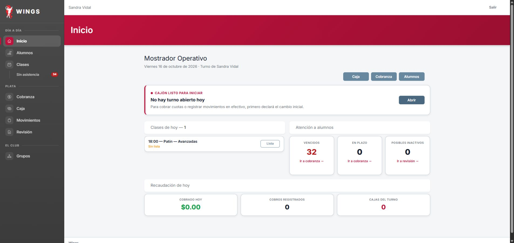
7.1-inicio-sandra.jpgCapturas reales del sitio de prueba, 25/10/2026. 31 situaciones: 25 coinciden y 6 no. El pago parcial de Joaquín no quedó acreditado por un error de ejecución: se cobraron $144.000 en vez de $100.000. Ese desvío se conserva y explica las diferencias financieras posteriores. Helena recibió una propuesta EXTRA adicional a lo previsto. Sin reparaciones ni aprobación integral.
Propuso $10.000 del último cierre #5 de Pablo. Se confirmó recibido y abrió caja #6, Sandra, 16/10 15:04, ABIERTA; inicial/esperado $10.000. Evidencia: 7.1-apertura-propuesta.jpg y 7.1-caja-abierta.jpg.

7.1-inicio-sandra.jpgCobrar no ofreció cuotas ni octubre y mostró pendiente $0. Noviembre sugirió $35.000. Se agregó manualmente, se eligió MP y se confirmó el aviso de adelanto. Pago CUOTA-18 registrado una vez; ficha Al día con Nov 2026 $35.000. Recibo descargado desde su enlace. Evidencia 7.2-*.jpg y 7.2-recibo-agustin.pdf.
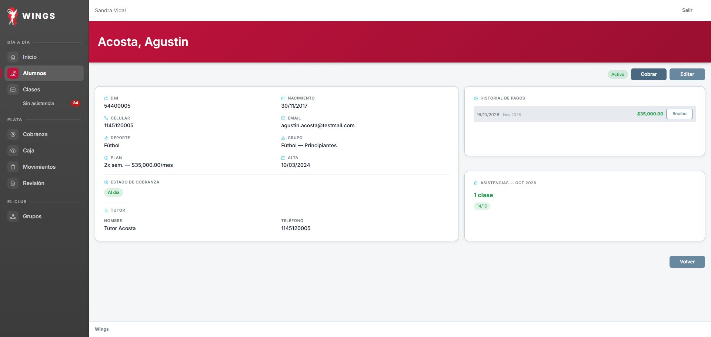
7.2-agustin-ficha-al-dia.jpgCobrar mostró solo inscripción $5.000 y Sin cuotas pendientes. Se registró CUOTA-19 por $5.000 EFE. Alumnos muestra Sofia Gomez Al día; recibo descargado y leído: Inscripción al club por única vez $5.000, Efectivo. Evidencia 7.3-*.jpg y PDF/PNG del recibo.
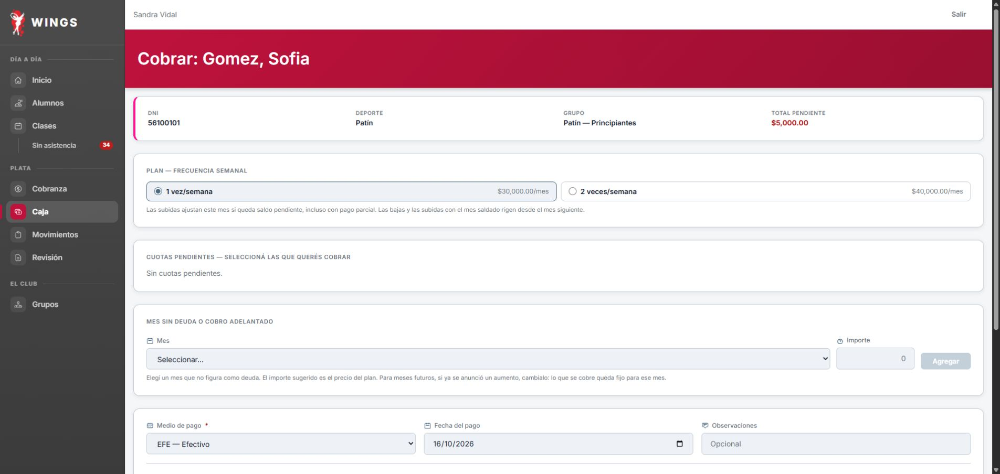
7.3-sofia-solo-inscripcion.jpgCon Todos los estados aparecen dos filas de Camila: Patín/Avanzadas Deudor $50.000, y Fútbol/Principiantes Al día $0 con aviso también debe $50.000 en Patín. Lectura de ambas filas guardada desde la pantalla y captura 7.4-cobranza-todos.jpg.
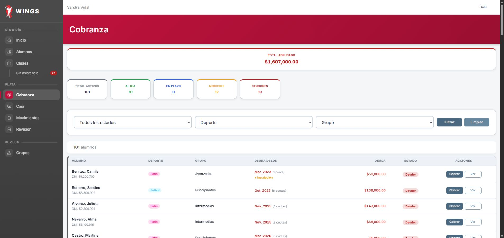
7.4-cobranza-todos.jpgDesde la ficha de Patín ofreció inscripción $5.000 y octubre $45.000. Se registró un pago CUOTA-20 de $50.000 MP con ambos conceptos. Después, ambas filas de Camila están Al día y Fútbol ya no muestra también debe. Recibo y capturas 7.5-*.
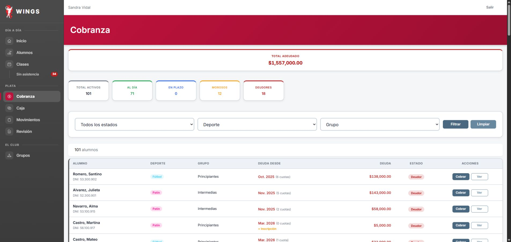
7.5-camila-cobranza-final.jpgError deliberado CUOTA-21: Dante, octubre $38.000 EFE. Confirmar sin motivo mostró Completa este campo y no canceló. Con Se cargó a Dante Ramos, pagó Franco Molina se anuló; detalle visible con motivo y ficha Dante Moroso, octubre $38.000. PDF ANULADO con motivo. Después CUOTA-23 cobró Franco $38.000 EFE y Alumnos lo muestra Al día. Rechazos iniciales del control resueltos tras autorización directa de Carlos; no se usó otra vía.
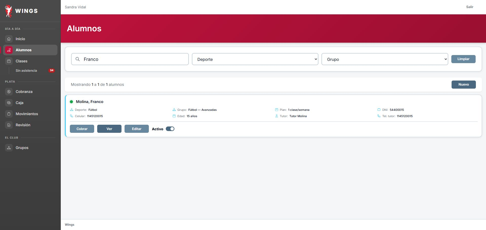
7.6-franco-al-dia.jpgSe cobró octubre $15.000 en efectivo, CUOTA-22. Alumnos muestra Ferrari, Bautista Al día. Capturas 7.7-*.jpg y recibo descargado.
7.7-cobranza-bautista-antes.jpgCUOTA-24 por $30.000, Banco Nación, registrado una sola vez. La tarjeta de Gutierrez, Paulina quedó Al día. El PDF descargado desde Recibo dice Banco Nación. Evidencia: evidencia-dia-07/7.8-paulina-al-dia.jpg y 7.8-recibo-paulina.pdf.
7.8-paulina-resultado.jpgSe registró un egreso EFE Gastos Operativos / Insumos Varios de $6.800, Botiquín: gasas y cinta. Caja #6 muestra egresos $6.800 y efectivo esperado $61.200, $6.800 menos que antes del gasto. Se hizo antes de completar 7.6/7.8 por el bloqueo inicial del control, ya autorizado por Carlos.
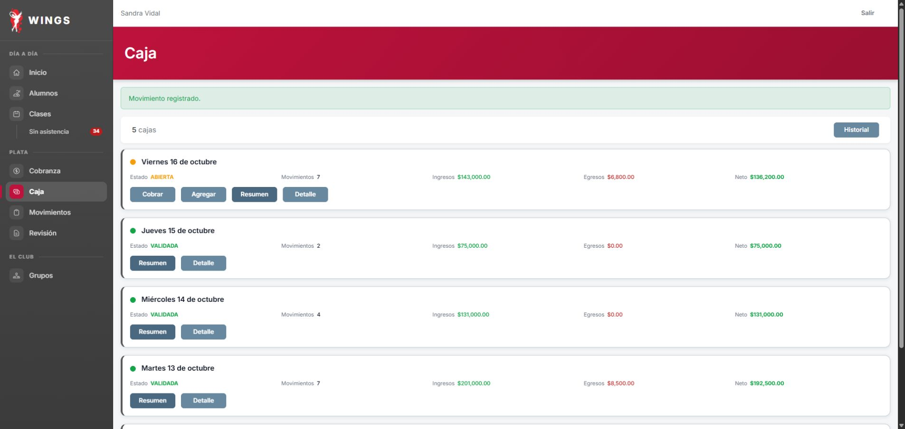
7.9-gasto-registrado.jpgCaja #6 cerrada. Antes de confirmar mostró esperado $61.200, contado $61.700, Sobrante $500 y entrega $51.700 con cambio $10.000. Después conserva 8 movimientos, ingresos $173.000 y egresos $6.800: no agregó ingreso por el sobrante. Evidencia: 7.10-sobrante-antes-cerrar.jpg, 7.10-caja-cerrada.jpg y 7.10-arqueo-cerrado.jpg.
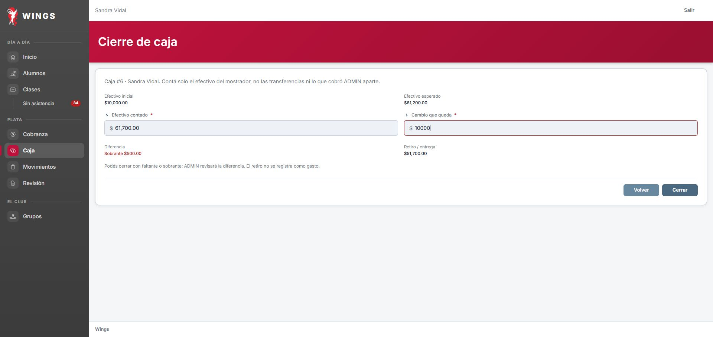
7.10-sobrante-antes-cerrar.jpgClase #80: 12 alumnas, 10 presentes; Martina Herrera y Valentina Suarez ausentes. Propuso EXTRA para las nueve indicadas y no para Emma Fernandez. Guardé y recargué: las diez marcas y los motivos persistieron. Evidencia: 7.11-propuestas-extra.txt y 7.11-persistida.jpg/txt.
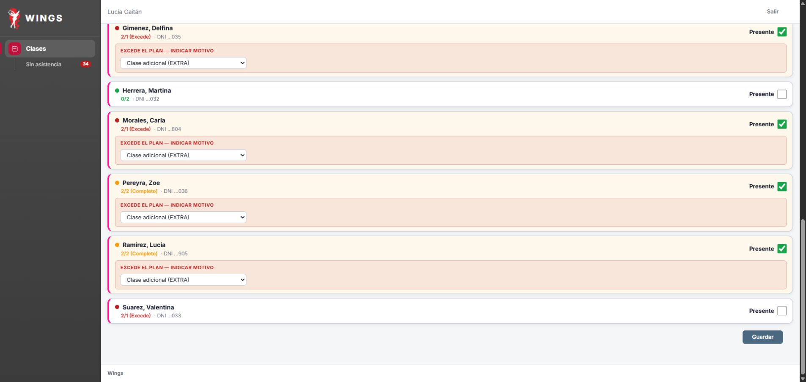
7.11-resultado-guardar.jpgClase #39 del 13/10 18–19: ocho alumnas, Olivia Rossi ausente y siete presentes. No apareció ningún selector EXTRA. Guardé y recargué; las siete marcas persistieron. Evidencia 7.12-propuestas.txt y 7.12-persistida.jpg/txt.
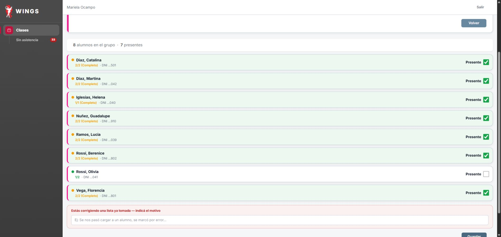
7.12-persistida.jpgClase #66: 14 alumnos, Lucas Gomez ausente de la nómina. Joaquín Vega y Felipe Sosa ausentes; 12 presentes. Propuso EXTRA para Thiago Diaz, Franco Molina, Lorenzo Morales, Mateo Rodriguez y Leon Rossi. Guardado y recarga conservaron marcas y motivos. Evidencia 7.13-propuestas-extra.txt y 7.13-persistida.jpg/txt.
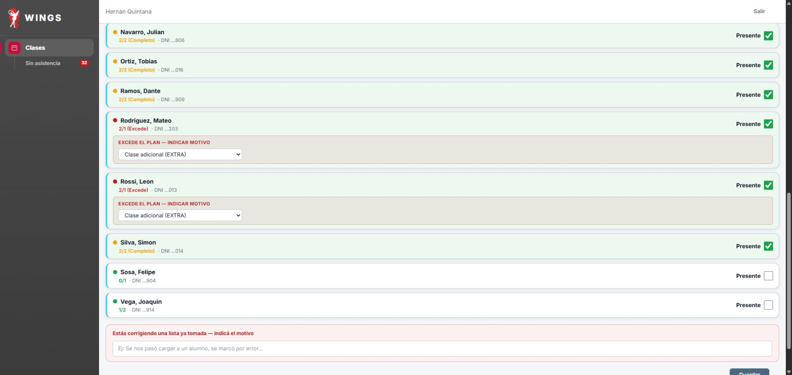
7.13-persistida.jpgEl dueño vio Sandra Vidal, cierre 16/10 15:29, diferencia $500 y entrega $51.700 en Resumen; en Detalle vio el motivo de Dante y tildó 9/9 renglones. Validó: Caja validada y reflejada en cashflow, caja #6 VALIDADA. Evidencia 7.14-*.jpg y 7.14-arqueo.txt.
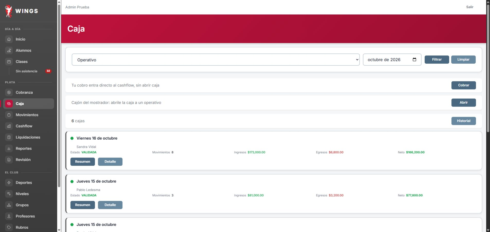
7.14-caja-validada.jpgSe creó una clase única el 31/10 de 12 a 13, Patín Federadas, Mariela Ocampo. Solo ofreció las cuatro profesoras de Patín. El listado del 31/10 la muestra; Ver trae ocho alumnas. No hubo bloqueo por fecha mínima. Evidencia 7.15-formulario.txt y capturas 7.15-*.jpg.
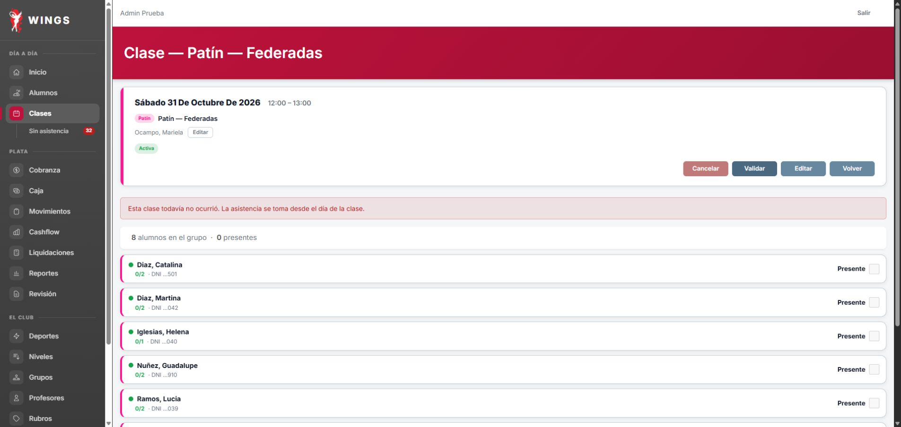
7.15-lista-ocho.jpgCobranza: $1.474.000, 101 activos, 74 Al día/0 En plazo/9 Morosos/18 Deudores. Reportes octubre $745.000 ingresos, $80.500 egresos, $664.500 resultado; origen de ingresos no incluye noviembre. Inicio: disponible $2.314.500, EFE $587.000, MP $1.574.000, BGA $123.500, BNA $30.000; por validar $0, Sin asistencia 32. Coincide, sin sumar sobrante. Evidencia 7.16-*.jpg/txt.
7.16-cobranza.jpgPropuso $10.000 del último cierre #6 de Sandra. Se contó/confirmó y abrió caja #7 de Pablo, 17/10 09:31, ABIERTA, inicial y esperado $10.000. Evidencia 8.1-apertura-propuesta.jpg y 8.1-caja-abierta.jpg.
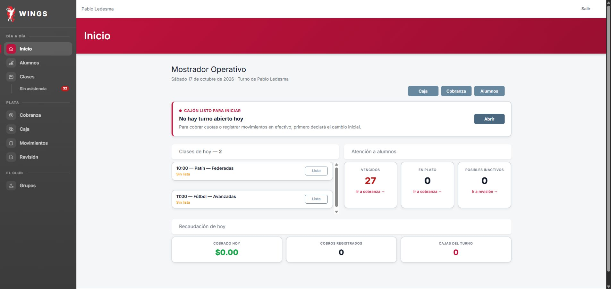
8.1-pablo-ingresado.jpgUn ingreso de $32.000 EFE, Torneos/Inscripciones, Torneo de primavera: 4 inscripciones. Caja #7: un movimiento, ingresos $32.000 y esperado $42.000. Evidencia 8.2-*.jpg.
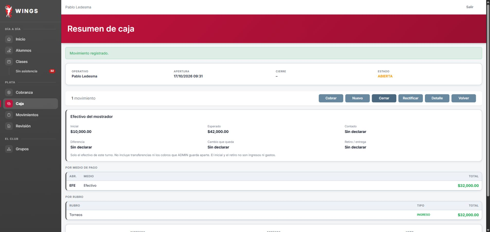
8.2-torneo-registrado.jpgDESVÍO DE EJECUCIÓN: al intentar cambiar octubre a $4.000, apareció No se pueden colocar más de dos decimales y el campo conservó $48.000. Codex envió sin detenerse a comprobar ese rechazo: CUOTA-25 cobró $144.000 MP (48.000/48.000/48.000), no $100.000. Joaquín quedó Al día, no Moroso con $44.000. No pidió motivo FIFO. No se canceló ni reparó. El caso de pago parcial queda sin acreditar; evidencia 8.3-*.jpg, ficha final y recibo.
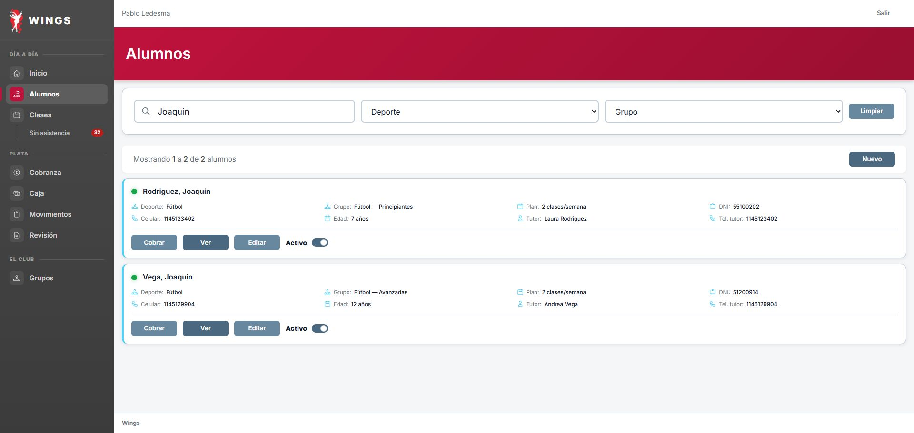
8.3-joaquin-al-dia-desvio.jpgGasto EFE Mantenimiento y arreglos/Reparaciones menores, Ruedas del carro de conos, creado $9.500 y editado a $5.900. Detalle conserva un único gasto, movimiento #34; esperado de efectivo $36.100. Evidencia 8.4-*.jpg y 8.4-detalle-final.txt.
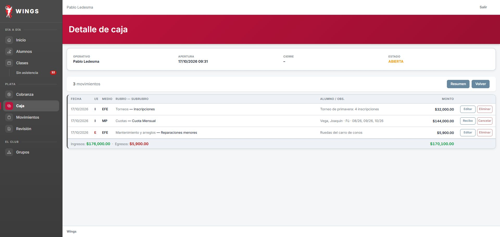
8.4-un-gasto-5900.jpgClase #48: ocho alumnas; presentes Helena Iglesias, Olivia Rossi, Guadalupe Nuñez y Berenice Rossi (4); las otras cuatro ausentes. DIFERENCIA: propuso EXTRA para Helena también (1/1 usado), además de Guadalupe y Berenice; Olivia no. Se dejaron las tres propuestas, guardó y persistió al recargar. Desde Mariela se ve clase nueva #81 del 31/10 12–13. Evidencia 8.5-*.jpg/txt.
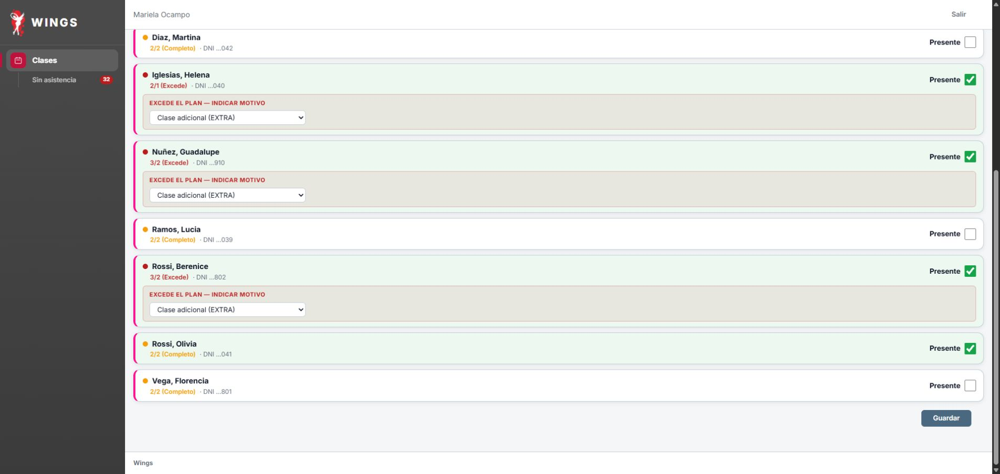
8.5-persistida.jpgClase #75: quince alumnos con Lucas Gomez. Se marcaron Joaquín Vega, Felipe Sosa, Lucas Gomez y Tomas Gimenez, cuatro presentes. Propuso EXTRA solo a Lucas y Tomas; no a Joaquín/Felipe. Se dejaron las propuestas, guardaron y persistieron al recargar. Evidencia 8.6-*.jpg/txt.
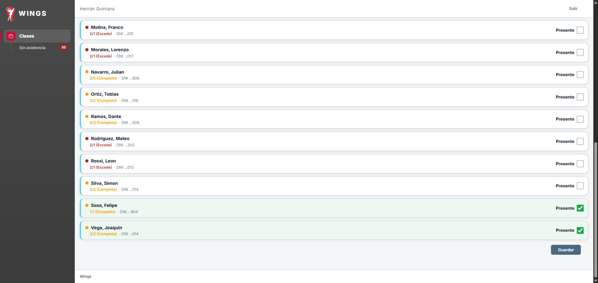
8.6-persistida.jpgCaja #7 de Pablo cerrada. Esperado/contado $36.100, Sin diferencia $0 antes de confirmar; cambio $10.000 y entrega $26.100. Resumen persistido conserva esos valores. Evidencia 8.7-*.jpg/txt.
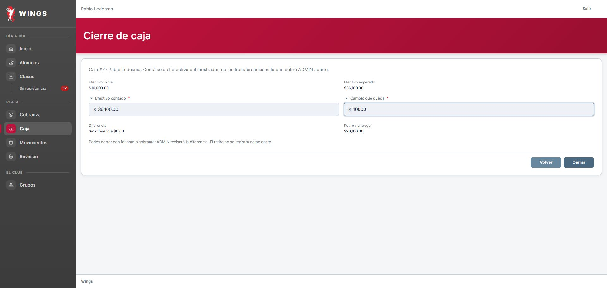
8.7-cierre-sin-diferencia.jpgEl dueño tildó 3/3 movimientos y validó caja #7: Caja validada y reflejada en cashflow, estado VALIDADA. Se conserva el cobro real de Joaquín por $144.000, sin corregir el desvío de 8.3. Evidencia 8.8-verificados.jpg y 8.8-caja-validada.jpg.
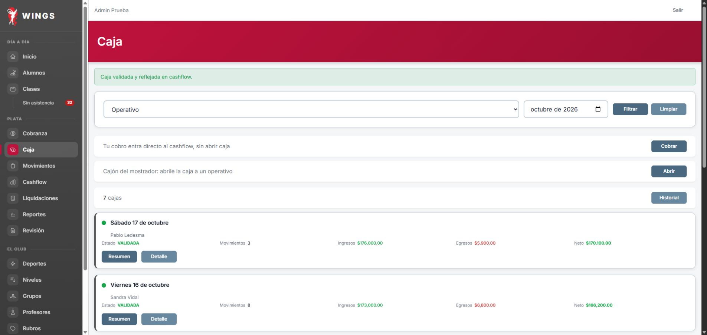
8.8-caja-validada.jpgNO coincide por el desvío de ejecución 8.3. Cobranza real: $1.330.000, 75 Al día/0 En plazo/9 Morosos/17 Deudores. Reportes octubre: ingresos $921.000, egresos $86.400, resultado $834.600, incluyendo agosto/septiembre cobrados ahora. Disponible $2.484.600: EFE $613.100, MP $1.718.000, Galicia $123.500, Nación $30.000. Sin asistencia 32, cajas por validar 0. Diferencias monetarias $44.000 conciliadas con CUOTA-25; esperado original intacto. Evidencia 8.9-*.jpg/txt.
8.9-cobranza.jpgInicio del 18/10 conserva el cierre real del sábado: deuda $1.330.000, ingresos $921.000, egresos $86.400, resultado $834.600 y disponible $2.484.600. Cajas por validar 0, Sin asistencia 32. Coincide con el cierre observado, aunque arrastra el desvío de 8.3 frente a los importes previstos por el guion. Evidencia 9.1-inicio-confirmado.jpg y 9.1-inicio.txt.
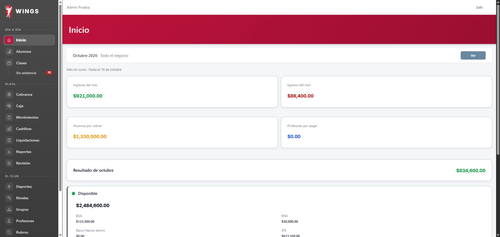
9.1-inicio-confirmado.jpgPatín ingresos $439.000 y egresos $0; Fútbol $450.000 y egresos $0. Suman $889.000; global $921.000, diferencia $32.000 Torneos/Inscripciones sin deporte. El filtro y exclusión de gastos del club coinciden; Fútbol y global exceden $44.000 al esperado por el cobro de 8.3. No se modificaron esperados. Evidencia 9.2-*.jpg/txt.
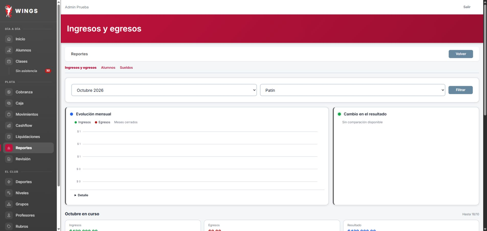
9.2-reporte-patin.jpgBaja guardada: Julieta Inactiva, ficha conserva los cinco meses y $143.000. Ya no figura en Cobranza (0 filas). Cobranza/Inicio/Reportes concuerdan en deuda real $1.187.000, 100 activos: 75 Al día/0 En plazo/9 Morosos/16 Deudores. La baja y conservación funcionan; totales/estados no coinciden con el guion por arrastre de 8.3 ($44.000 menos deuda, un Al día más/Moroso menos). Evidencia 9.3-*.jpg/txt.
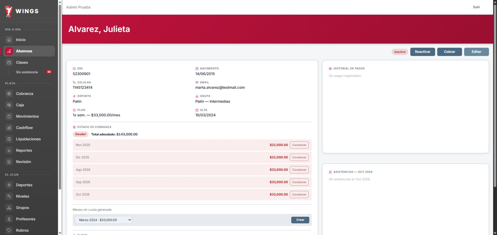
9.3-deuda-conservada.jpgPrecio Patín Principiantes 2/sem guardado de $40.000 a $44.000. Bianca conserva octubre $40.000 y su plan vigente $40.000. Mora no tiene cuotas pendientes; al elegir Noviembre 2026, Importe sugiere $44.000. No se agregó ni cobró: se volvió con Cancelar, el botón disponible en Cobrar. Evidencia 9.4-*.jpg/txt.
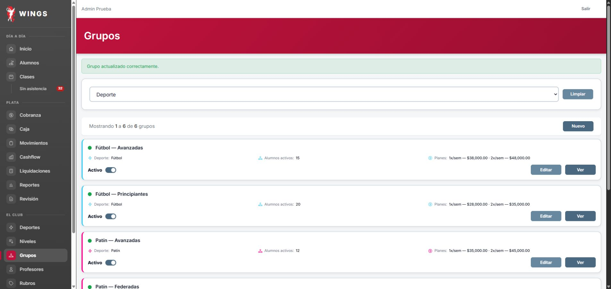
9.4-precio-guardado.jpgRocío Paz creada activa, usuario #8, rocio.paz@example.com, rol Operativo. Rubros/Sueldos contiene Op-Rocío Paz. Ingresó después de la pausa: Mostrador Operativo con su nombre, menú sin Cashflow ni Reportes; cero cobros/cajas del turno. No abrió caja; salió. Clave aleatoria solo en memoria, no incluida en evidencia. Evidencia 9.5-*.jpg/txt.
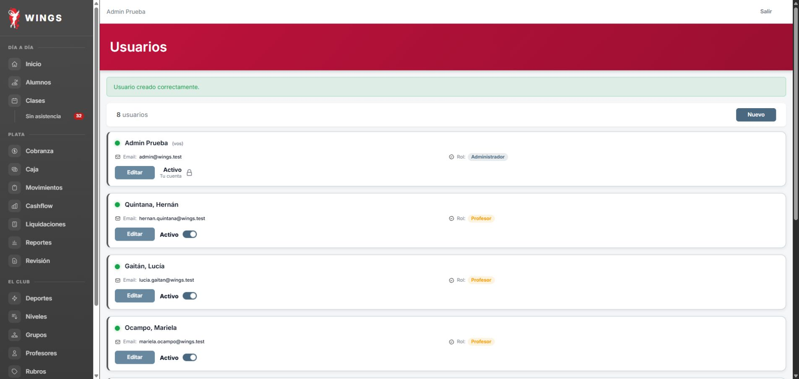
9.5-usuario-creado.jpgCierre real: deuda $1.187.000; 75 Al día/0 En plazo/9 Morosos/16 Deudores. Reportes octubre: ingresos $921.000, egresos $86.400, resultado $834.600; aportes $15.000/retiros $0 fuera del resultado. Disponible $2.484.600 (EFE $613.100, MP $1.718.000, BGA $123.500, BNA $30.000), todo confirmado. Inicio Sin asistencia 32/cajas por validar 0. No coincide por arrastre de CUOTA-25 en 8.3; no se reparó. Evidencia 9.6-*.jpg/txt.
9.6-inicio-entrega.jpg